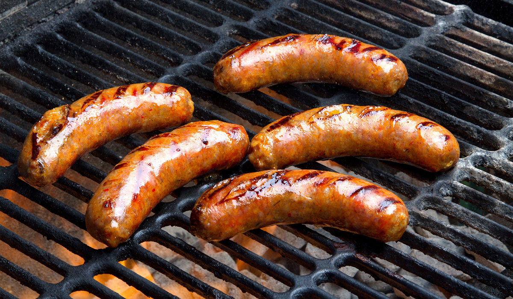

Beer Brats

Description
The brats will make your mouth water. They are super easy to make
and are one of my go-tos for get togethers.
They take little time and are very hands off.
The end result is a very juicy and delicious brat
with a subtle beer taste that enhances the flavors of the brat.
Ingredients
- 4 cans of a mild beer (Pilzners are a good choice)
- 1 package of raw brats
- Pour beers into a large pot and bring to a low boil.
- Add brats to beer pot and boil for 20 minutes to ensure cooking through.
- While brats are boiling bring grill up to temp to a medium high heat.
- Once brats are done boiling take out of beer and put directly on grill.
- Cook on grill until you get the desired grill marks.
This step is personal preference since brats will be already cooked from the boil.
- Pull brats off of grill and put in bun with favorite condiments, or otherwise.